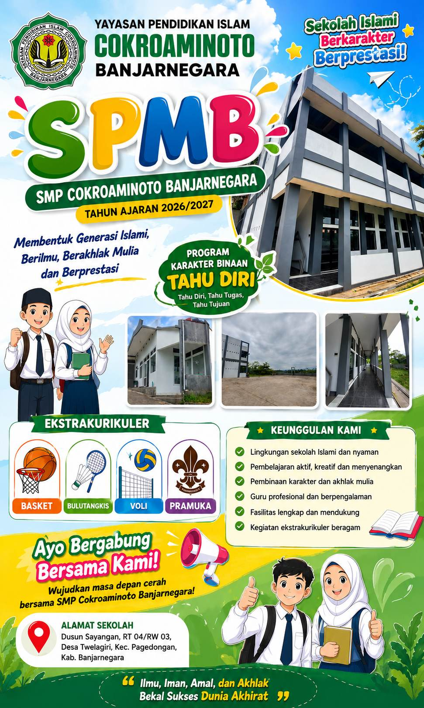
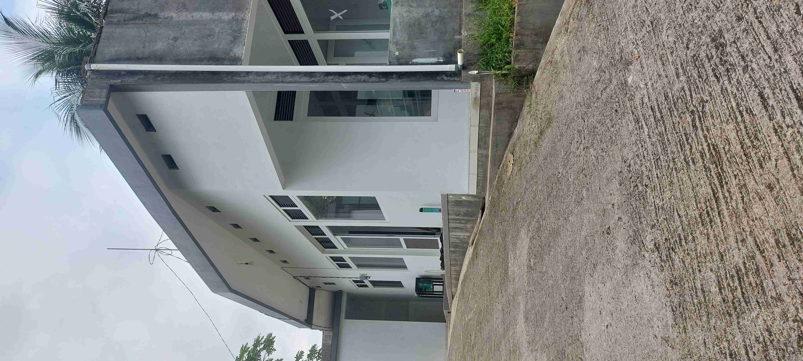
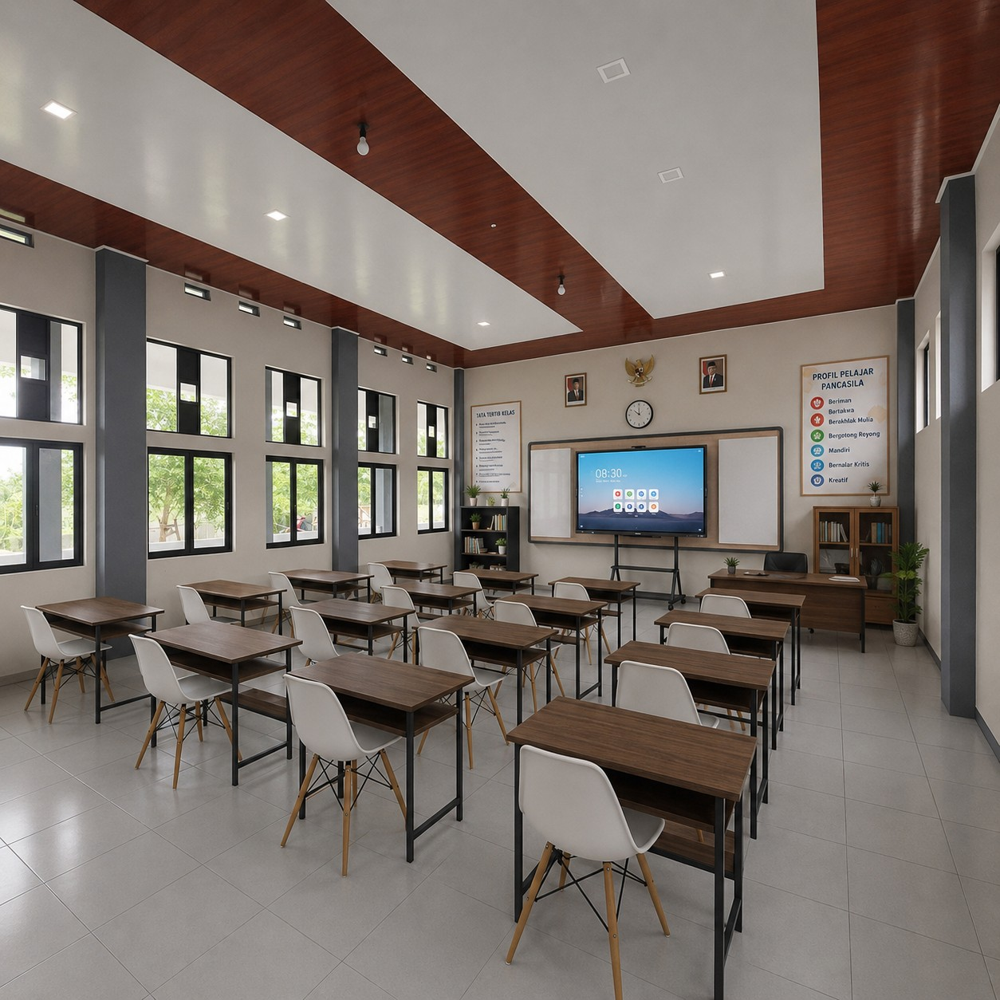
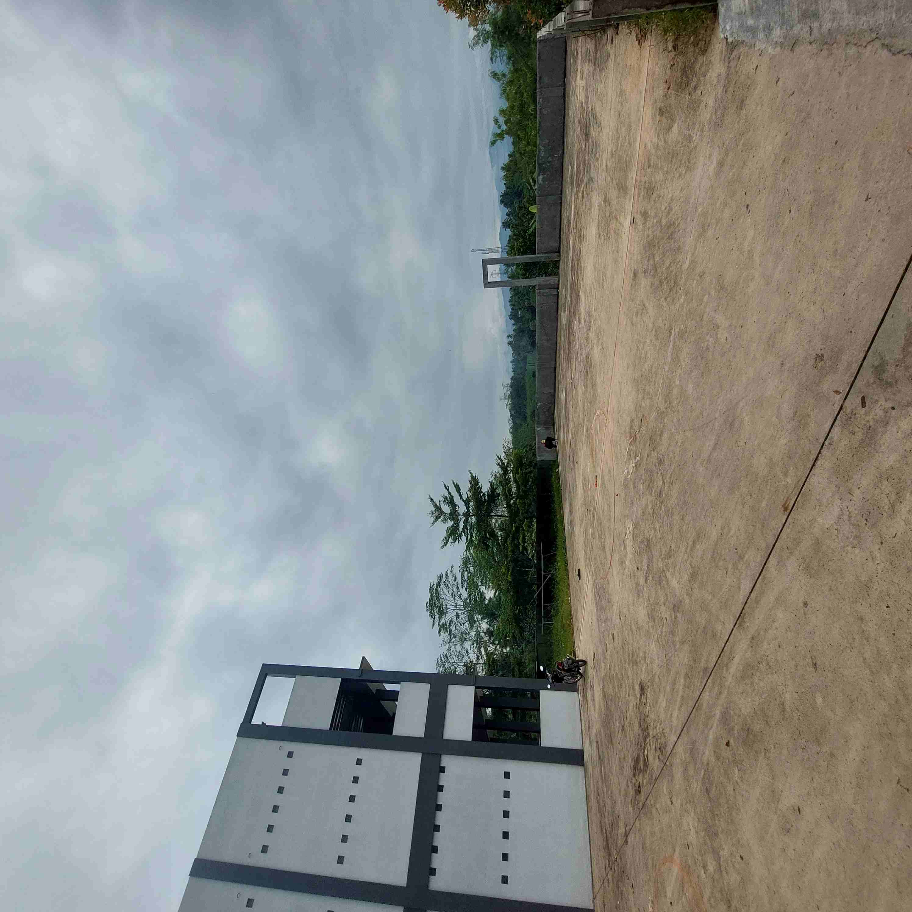
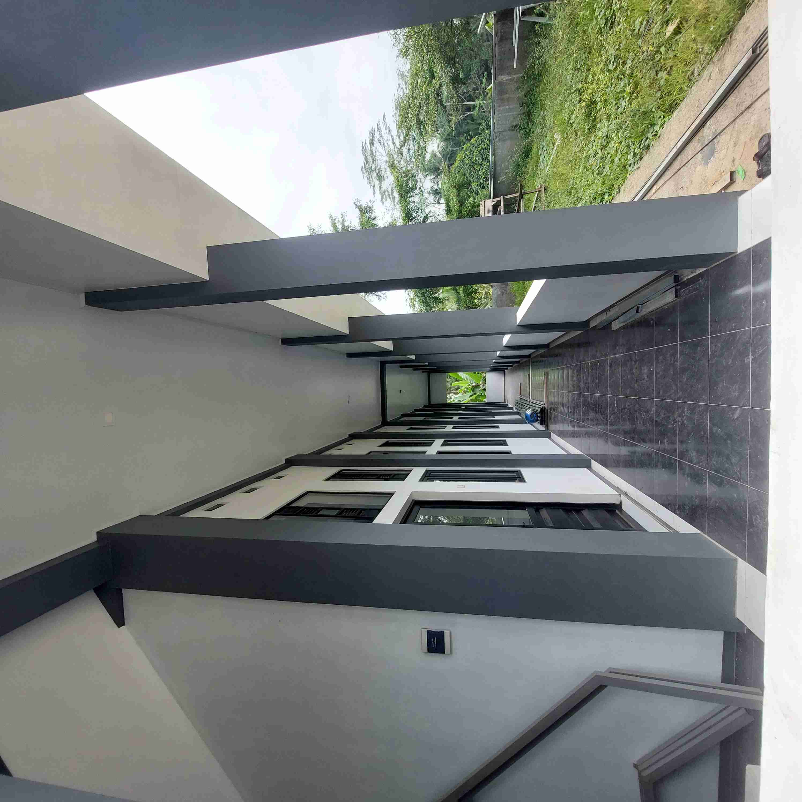
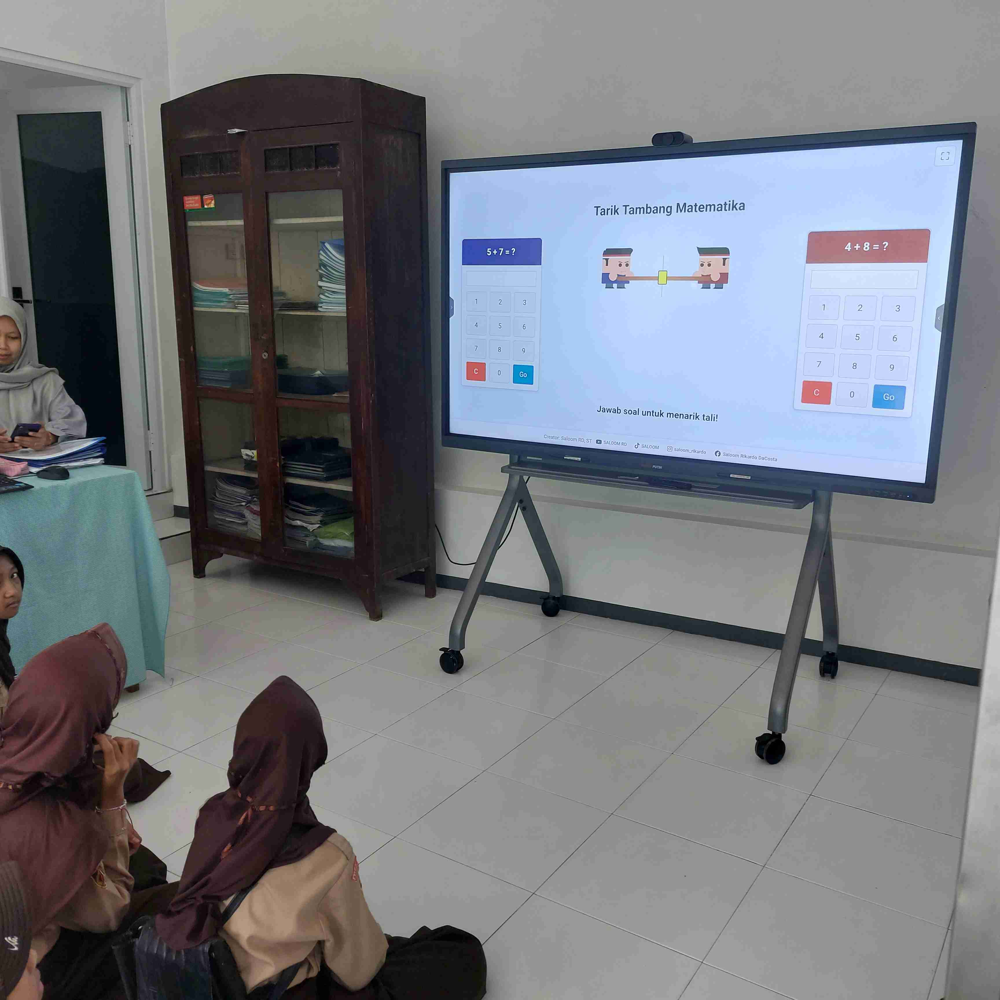

Program pembentukan karakter selama tiga tahun yang membantu siswa mengenal dirinya, menemukan bakat, mengembangkan potensi, dan menentukan arah pendidikan dengan percaya diri.

Melihat lebih dekat lingkungan belajar yang nyaman dan inspiratif.





Lulus tanpa tahu apa kekuatan dan kelebihan yang mereka miliki.
Kehilangan fokus pada dunia nyata dan terjebak konsumsi konten pasif.
Memilih sekolah lanjutan hanya karena takut terpisah dari lingkungan lama.
Menjalani pendidikan bagai rutinitas tanpa target masa depan yang jelas.
Kami merancang peta jalan yang jelas untuk membantu setiap anak menemukan jati dirinya.
Siapa Aku? (Kenal Diri)
Aku Bisa Apa? (Potensi)
Aku Akan Menjadi Apa? (Masa Depan)
Pondasi utama yang kami tanamkan pada setiap peserta didik.
Pengenalan tentang kode pemrograman dasar untuk melatih logika berpikir, pemecahan masalah, dan kesiapan menghadapi era digital.
Metode belajar komunikasi efektif dan percaya diri melalui ekstrakurikuler serta pendelegasian siswa dalam berbagai lomba.
Fasilitas olahraga komprehensif yang meliputi lapangan bola basket, sepakbola, bola voli, dan badminton untuk kebugaran fisik siswa.
Pengembangan minat nada dan suara melalui program seni musik yang berfokus pada pelatihan paduan suara.
Wadah kreativitas siswa dalam mengekspresikan diri melalui eksplorasi seni budaya lokal dan praktik seni lukis.
Praktik bisnis nyata terintegrasi melalui pengelolaan koperasi sekolah, program agraria di lahan tanam sekitar sekolah, dan usaha mandiri ayam petelur.
Membangun kebiasaan membaca dan mengolah informasi yang berfokus pada literasi digital menggunakan media Chromebook.
Pembentukan karakter religius yang berlandaskan pada materi keislaman khas Yayasan Pendidikan Islam Cokroaminoto (YPIC) Banjarnegara.
Materi inovatif yang mengajarkan pengenalan dan penggunaan dasar AI (Kecerdasan Buatan) yang diintegrasikan melalui program ekstrakurikuler.
Pembelajaran modern berbasis Sains, Teknologi, Engineering, & Matematika dengan penjelasan interaktif menggunakan Interactive Flat Panel 60 Inchi.
Kami menyediakan ekosistem untuk berbagai jenis kecerdasan.
Klik ikon di bawah ini untuk melihat detail program.
Fasilitator, Mentor, dan Penunjuk Arah.
Pendukung, Motivator, dan Ruang Aman.
Klik setiap kartu untuk melihat contoh laporan visual siswa kami.
Laporan kepribadian mendalam mengenai kebiasaan positif anak selama 3 tahun.
Kumpulan proyek nyata yang dihasilkan anak sebagai bukti kompetensinya.
Pemetaan kekuatan bakat untuk memandu keputusan di jenjang SMA/SMK.
Rencana studi terukur menuju universitas atau karier impian.
Kumpulan bukti apresiasi atas kerja keras anak di berbagai bidang.
Visi personal siswa yang membangun motivasi internal sejak SMP.
Masa Depan Dibangun Sejak Hari Pertama Anak Masuk Sekolah.